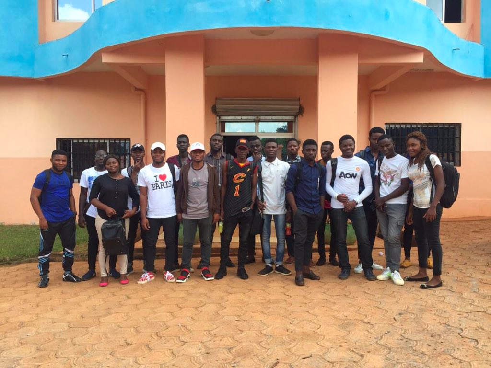

Buea 2016
University of Buea, Cameroon.

Dschang 2017
University of Dschang, Cameroon.

Yaounde 2018
ICT University, Yaounde, Cameroon.
University of Buea, Cameroon.
University of Dschang, Cameroon.
ICT University, Yaounde, Cameroon.
The free Java bootcamp was created in 2014 to address a common problem faced by learners in their quest to master Java programming. While there are numerous online tutorials, courses, and books available on the subject, there remains a significant gap in terms of interactive learning experiences.
That's why the free Java bootcamp was established with a clear mission: to provide a dynamic and engaging platform where learners can acquire knowledge at an accelerated pace while receiving prompt, interactive assistance. Our aim is to create an inclusive community where questions are not only welcomed but actively encouraged, allowing participants to deepen their understanding and overcome any obstacles they may encounter.
What sets us apart is the presence of experienced teachers who lead each workshop, ensuring that learners receive expert guidance throughout their journey. Moreover, our bootcamp fosters a collaborative environment, where peers learn and practice together, supporting one another's growth.
By joining our free Java bootcamp, you'll not only gain comprehensive knowledge but also experience the joy of learning in an interactive and supportive setting. We welcome all individuals, regardless of their background or prior experience, and we are committed to empowering every participant to reach their full potential.
Support our vision of making Java accessible to all by joining our vibrant community or contributing to our cause. Together, we can create a learning environment that is not only effective but also enjoyable and inspiring.